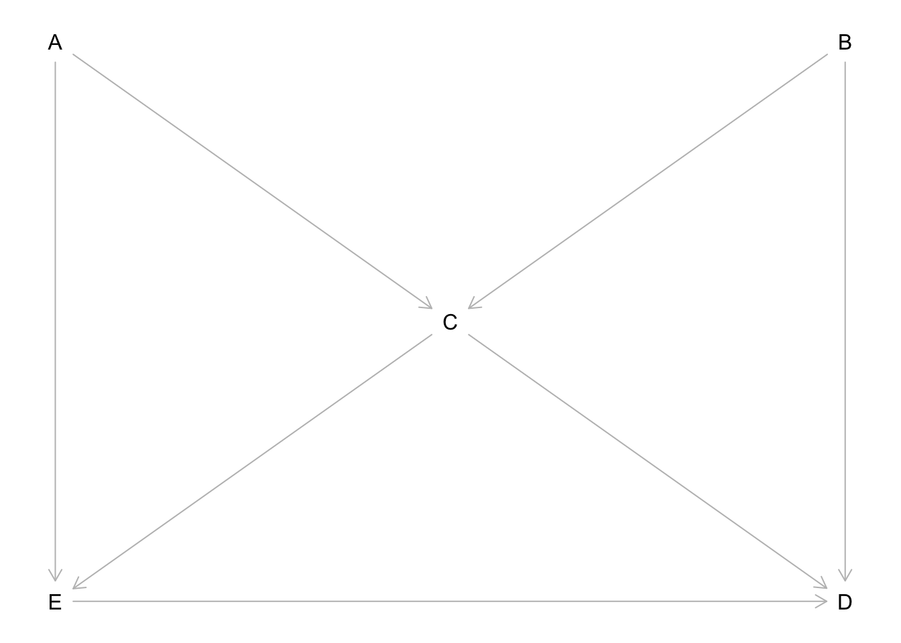

Directed acyclic graphs and confounding
Refresher
Notation: exposure \(X\), outcome \(Y\)
- Pathway
- Mediator:
- Backdoor pathway (first arrow goes wrong way from start point, other arrows can go in either direction): \(X \leftarrow L \rightarrow Y\)
- Collider
A pathway is closed if
- We adjust for a variable that’s not a collider on the pathway, e.g. in the DAG below adjusting for \(L\), indicated with the box, closes the path \(X \leftarrow L \rightarrow Y\)
- There’s a collider on the pathway, i.e., in the collider DAG the path \(X \rightarrow \text{Collider} \leftarrow Y\) is closed (without adjusting for the collider)
Question 1
These questions were inspired by material given by Prof M. A. Hernán.
a)
What is the triangle definition of a confounder? Hint: it has three criteria.
A confounder is
- Associated with the exposure, Confounder \(\rightarrow X\)
- Associated with the outcome conditional on the exposure, Confounder \(\rightarrow Y\) (i.e., a pathway not through \(X\), hence which could be blocked by adjusting for \(X\))
- Not on the causal pathway between the exposure and outcome
b)
What is Pearl’s definition of confounding?
There is confounding of the exposure and outcome relationship when there is an open backdoor pathway between them (and therefore, a confounder is any variable on an open backdoor pathway between an exposure and outcome.)
c)
For each of the following DAGs assess whether
- \(L\) is confounder under the triangle definition of a confounder (assess each of the 3 criteria)
- there is confounding of the \(X\)–\(Y\) relationship under Pearl’s definition of confounding
DAG A

- Triangle definition:
- Yes, \(L\) is associated with the exposure, \(L \rightarrow X\)
- Yes, \(L\) is associated with the outcome conditional upon the exposure, \(L \rightarrow Y\) (i.e., \(L \rightarrow X \rightarrow Y\) could be blocked at X but \(L \rightarrow Y\) would still be open)
- Yes, \(L\) is not on the causal
pathway between the exposure and outcome
Overall: Yes, \(L\) is a confounder
- Pearl: Yes, there is confounding since \(X \leftarrow L \rightarrow Y\) is an open backdoor pathway
DAG B

- Triangle definition:
- Yes, \(L\) is associated with the exposure, \(L \rightarrow X\)
- Yes, \(L\) is associated with the outcome conditional upon the exposure, \(L \leftarrow U \rightarrow Y\)
- Yes, \(L\) is not on the causal
pathway between the exposure and outcome
Overall: Yes, \(L\) is a confounder
- Pearl: Yes there is confounding of \(X\)–\(Y\) relationship because \(X \leftarrow L \leftarrow U \rightarrow Y\) is an open backdoor pathway
DAG C

- Triangle definition:
- Yes, \(L\) is associated with the exposure, \(L \leftarrow U \rightarrow X\)
- Yes, \(L\) is associated with the outcome conditional upon the exposure, \(L \rightarrow Y\)
- Yes, \(L\) is not on the causal
pathway between the exposure and outcome
Overall: Yes, \(L\) is a confounder
- Pearl: Yes there is confounding of the \(X\)–\(Y\) relationship because \(X \leftarrow U \rightarrow L \rightarrow Y\) is an open backdoor pathway.
DAG D

- Triangle definition:
- Yes, \(L\) is associated with the exposure, \(L \leftarrow U_2 \rightarrow X\) is an open path
- Yes, \(L\) is associated with the outcome conditional upon the exposure, \(L \leftarrow U_1 \rightarrow Y\) is an open path
- Yes, \(L\) is not on the causal
pathway between \(X\) and \(Y\)
Overall: Yes, \(L\) is a confounder
- Pearl: No! There is no confounding of the \(X\)–\(Y\) relationship because \(X \leftarrow U_2 \rightarrow L \leftarrow U_1 \rightarrow Y\) is a closed pathway. Under d-separation (directional-separation) rules \(L\) is a collider of \(U_1\) and \(U_2\). Hence, without adjustment for the \(L\) the path is closed. Including \(L\) in a model will open the path between \(U_1\) and \(U_2\) which would bias the association between \(X\) and \(Y\), since \(X \leftarrow U_2 \leftrightarrow U_1 \rightarrow Y\) would be an open backdoor path. Hence, under the d-separation rules we don’t want to adjust for \(L\), even though we consider it to be a confounder under the triangle definition.
Question 2
The following DAG describes a model between an exposure (\(E\)), a disease outcome (\(D\)), and three other variables (\(A\), \(B\), and \(C\)).

a)
List all the (both open and closed) backdoor pathways between \(E\) and \(D\).
- \(E \leftarrow C \rightarrow D\)
- \(E \leftarrow C \leftarrow B \rightarrow D\)
- \(E \leftarrow A \rightarrow C \rightarrow D\)
- \(E \leftarrow A \rightarrow C \leftarrow B \rightarrow D\)
b)
With respect to \(A\) and \(B\) how would you describe \(C\)?
\(C\) is a collider with respect to \(A\) and \(B\).
c)
If we fitted a regression model using \(B\) as the outcome regressed on covariates \(A\) and \(C\), what could be the problem?
Since \(C\) is a collider of \(A\) and \(B\), fitting such a model would be biased due to adjustment for a collider. It would induce an assocation between \(A\) and \(B\), \(A \leftrightarrow B\).
d)
Suppose we want to estimate the effect of \(E\) on \(D\), is there one best model to estimate this association? Write down the best model/s
There are several models which block all potential backdoor pathways. These are:
- Adjusting for \(C\) and \(A\)
- Adjusting for \(C\) and \(B\)
- Adjusting for \(C\) and \(A\) and \(B\)
Given that we must include in \(C\) we must then include one or both of \(A\) and \(B\) to block the \(A\)–\(B\) pathway which is opened by adjusting for \(C\).
There’s an argument to be made for adjusting for no variables as the bias induced by adjusting for \(C\) could be worse than the \(E \leftarrow C \rightarrow D\) pathway.e)
Verify your answers using the dagitty/ggdag packages in R (or the dagitty web app here).
library(dagitty)
library(ggdag)
theme_set(theme_dag())
g <- dagitty('dag {
E <- A -> C <- B -> D
E -> D
C -> E
C -> D
E [exposure, pos="0,2"]
D [outcome, pos="2,2"]
A [pos="0,0"]
B [pos="2,0"]
C [pos="1,1"]
}')
plot(g)
library(ggdag)
theme_set(theme_dag())
butterfly_bias(x = "E", y = "D", a = "A", m = "C", b = "B",
x_y_associated = TRUE) %>%
ggdag(use_labels = "label", text = FALSE)
paths(g, "E", "D")## $paths
## [1] "E -> D" "E <- A -> C -> D" "E <- A -> C <- B -> D"
## [4] "E <- C -> D" "E <- C <- B -> D"
##
## $open
## [1] TRUE TRUE FALSE TRUE TRUEWhich paths remain open when conditioning on \(C\).
paths(g, "E", "D", c("C"))## $paths
## [1] "E -> D" "E <- A -> C -> D" "E <- A -> C <- B -> D"
## [4] "E <- C -> D" "E <- C <- B -> D"
##
## $open
## [1] TRUE FALSE TRUE FALSE FALSEimpliedConditionalIndependencies(g)## A _||_ B
## A _||_ D | B, C, E
## B _||_ E | A, CWhat do we need to adjust for to estimate the effect of \(E\) on \(D\)?
adjustmentSets(g)## { B, C }
## { A, C }{ A, B, C }
Applied example

- The orange arrows represent a closed back-door path: chronic beta-blocker therapy \(\leftarrow\) heart failure \(\rightarrow\) Crackles \(\leftarrow\) Pneumonia \(\rightarrow\) acute respiratory distress syndrome (ARDS).
- Crackles stands for auscultatory crackles: https://en.wikipedia.org/wiki/Crackles
- Crackles is a collider that naturally leaves the back-door path closed. However, control for crackles would open the back-door path, introducing confounding through the path (beta-blocker \(\leftarrow\) heart failure \(\leftrightarrow\) pneumonia \(\rightarrow\) ARDS).
- M-bias: bias induced by adjusting for a variable on a backdoor pathway which is a collider on that pathway.
We can modify the DAG to show that we don’t need to adjust under an M structure.
g2 <- dagitty('dag {
E <- A -> C <- B -> D
E -> D
E [exposure, pos="0,2"]
D [outcome, pos="2,2"]
A [pos="0,0"]
B [pos="2,0"]
C [pos="1,1"]
}')
plot(g2)adjustmentSets(g2)## {}
Session info
─ Session info ───────────────────────────────────────────────────────────────────────────────────────────────────────────────────────────
setting value
version R version 4.2.0 (2022-04-22)
os macOS Monterey 12.4
system aarch64, darwin20
ui X11
language (EN)
collate en_GB.UTF-8
ctype en_GB.UTF-8
tz Europe/London
date 2022-06-13
pandoc 2.18 @ /opt/homebrew/bin/ (via rmarkdown)
─ Packages ───────────────────────────────────────────────────────────────────────────────────────────────────────────────────────────────
package * version date (UTC) lib source
assertthat 0.2.1 2019-03-21 [1] CRAN (R 4.2.0)
backports 1.4.1 2021-12-13 [1] CRAN (R 4.2.0)
base64enc 0.1-3 2015-07-28 [1] CRAN (R 4.2.0)
boot 1.3-28 2021-05-03 [1] CRAN (R 4.2.0)
broom 0.8.0 2022-04-13 [1] CRAN (R 4.2.0)
bslib 0.3.1 2021-10-06 [1] CRAN (R 4.2.0)
cellranger 1.1.0 2016-07-27 [1] CRAN (R 4.2.0)
checkmate 2.1.0 2022-04-21 [1] CRAN (R 4.2.0)
cli 3.3.0 2022-04-25 [1] CRAN (R 4.2.0)
clipr 0.8.0 2022-02-22 [1] CRAN (R 4.2.0)
cluster 2.1.3 2022-03-28 [1] CRAN (R 4.2.0)
colorspace 2.0-3 2022-02-21 [1] CRAN (R 4.2.0)
crayon 1.5.1 2022-03-26 [1] CRAN (R 4.2.0)
curl 4.3.2 2021-06-23 [1] CRAN (R 4.2.0)
dagitty * 0.3-1 2021-01-21 [1] CRAN (R 4.2.0)
data.table 1.14.2 2021-09-27 [1] CRAN (R 4.2.0)
DBI 1.1.2 2021-12-20 [1] CRAN (R 4.2.0)
dbplyr 2.2.0 2022-06-05 [1] CRAN (R 4.2.0)
desc 1.4.1 2022-03-06 [1] CRAN (R 4.2.0)
details 0.3.0 2022-03-27 [1] CRAN (R 4.2.0)
DiagrammeR * 1.0.9 2022-03-05 [1] CRAN (R 4.2.0)
digest 0.6.29 2021-12-01 [1] CRAN (R 4.2.0)
dplyr * 1.0.9 2022-04-28 [1] CRAN (R 4.2.0)
ellipsis 0.3.2 2021-04-29 [1] CRAN (R 4.2.0)
evaluate 0.15 2022-02-18 [1] CRAN (R 4.2.0)
fansi 1.0.3 2022-03-24 [1] CRAN (R 4.2.0)
farver 2.1.0 2021-02-28 [1] CRAN (R 4.2.0)
fastmap 1.1.0 2021-01-25 [1] CRAN (R 4.2.0)
forcats * 0.5.1 2021-01-27 [1] CRAN (R 4.2.0)
foreign 0.8-82 2022-01-16 [1] CRAN (R 4.2.0)
Formula * 1.2-4 2020-10-16 [1] CRAN (R 4.2.0)
fs 1.5.2 2021-12-08 [1] CRAN (R 4.2.0)
generics 0.1.2 2022-01-31 [1] CRAN (R 4.2.0)
ggdag * 0.2.4 2021-10-10 [1] CRAN (R 4.2.0)
ggforce 0.3.3 2021-03-05 [1] CRAN (R 4.2.0)
ggplot2 * 3.3.6 2022-05-03 [1] CRAN (R 4.2.0)
ggraph 2.0.5 2021-02-23 [1] CRAN (R 4.2.0)
ggrepel 0.9.1 2021-01-15 [1] CRAN (R 4.2.0)
glue 1.6.2 2022-02-24 [1] CRAN (R 4.2.0)
graphlayouts 0.8.0 2022-01-03 [1] CRAN (R 4.2.0)
gridExtra 2.3 2017-09-09 [1] CRAN (R 4.2.0)
gtable 0.3.0 2019-03-25 [1] CRAN (R 4.2.0)
haven 2.5.0 2022-04-15 [1] CRAN (R 4.2.0)
highr 0.9 2021-04-16 [1] CRAN (R 4.2.0)
Hmisc * 4.7-0 2022-04-19 [1] CRAN (R 4.2.0)
hms 1.1.1 2021-09-26 [1] CRAN (R 4.2.0)
htmlTable 2.4.0 2022-01-04 [1] CRAN (R 4.2.0)
htmltools 0.5.2 2021-08-25 [1] CRAN (R 4.2.0)
htmlwidgets 1.5.4 2021-09-08 [1] CRAN (R 4.2.0)
httr 1.4.3 2022-05-04 [1] CRAN (R 4.2.0)
igraph 1.3.1 2022-04-20 [1] CRAN (R 4.2.0)
jpeg 0.1-9 2021-07-24 [1] CRAN (R 4.2.0)
jquerylib 0.1.4 2021-04-26 [1] CRAN (R 4.2.0)
jsonlite 1.8.0 2022-02-22 [1] CRAN (R 4.2.0)
knitr 1.39 2022-04-26 [1] CRAN (R 4.2.0)
labeling 0.4.2 2020-10-20 [1] CRAN (R 4.2.0)
lattice * 0.20-45 2021-09-22 [1] CRAN (R 4.2.0)
latticeExtra 0.6-29 2019-12-19 [1] CRAN (R 4.2.0)
lifecycle 1.0.1 2021-09-24 [1] CRAN (R 4.2.0)
lubridate 1.8.0 2021-10-07 [1] CRAN (R 4.2.0)
magrittr 2.0.3 2022-03-30 [1] CRAN (R 4.2.0)
MASS 7.3-57 2022-04-22 [1] CRAN (R 4.2.0)
Matrix 1.4-1 2022-03-23 [1] CRAN (R 4.2.0)
modelr 0.1.8 2020-05-19 [1] CRAN (R 4.2.0)
munsell 0.5.0 2018-06-12 [1] CRAN (R 4.2.0)
nnet 7.3-17 2022-01-16 [1] CRAN (R 4.2.0)
pillar 1.7.0 2022-02-01 [1] CRAN (R 4.2.0)
pkgconfig 2.0.3 2019-09-22 [1] CRAN (R 4.2.0)
png 0.1-7 2013-12-03 [1] CRAN (R 4.2.0)
polyclip 1.10-0 2019-03-14 [1] CRAN (R 4.2.0)
purrr * 0.3.4 2020-04-17 [1] CRAN (R 4.2.0)
R6 2.5.1 2021-08-19 [1] CRAN (R 4.2.0)
RColorBrewer 1.1-3 2022-04-03 [1] CRAN (R 4.2.0)
Rcpp 1.0.8.3 2022-03-17 [1] CRAN (R 4.2.0)
readr * 2.1.2 2022-01-30 [1] CRAN (R 4.2.0)
readxl 1.4.0 2022-03-28 [1] CRAN (R 4.2.0)
reprex 2.0.1 2021-08-05 [1] CRAN (R 4.2.0)
rlang 1.0.2 2022-03-04 [1] CRAN (R 4.2.0)
rmarkdown 2.14 2022-04-25 [1] CRAN (R 4.2.0)
rpart 4.1.16 2022-01-24 [1] CRAN (R 4.2.0)
rprojroot 2.0.3 2022-04-02 [1] CRAN (R 4.2.0)
rstudioapi 0.13 2020-11-12 [1] CRAN (R 4.2.0)
rvest 1.0.2 2021-10-16 [1] CRAN (R 4.2.0)
sass 0.4.1 2022-03-23 [1] CRAN (R 4.2.0)
scales 1.2.0 2022-04-13 [1] CRAN (R 4.2.0)
sessioninfo 1.2.2 2021-12-06 [1] CRAN (R 4.2.0)
stringi 1.7.6 2021-11-29 [1] CRAN (R 4.2.0)
stringr * 1.4.0 2019-02-10 [1] CRAN (R 4.2.0)
survival * 3.3-1 2022-03-03 [1] CRAN (R 4.2.0)
tibble * 3.1.7 2022-05-03 [1] CRAN (R 4.2.0)
tidygraph 1.2.1 2022-04-05 [1] CRAN (R 4.2.0)
tidyr * 1.2.0 2022-02-01 [1] CRAN (R 4.2.0)
tidyselect 1.1.2 2022-02-21 [1] CRAN (R 4.2.0)
tidyverse * 1.3.1 2021-04-15 [1] CRAN (R 4.2.0)
tweenr 1.0.2 2021-03-23 [1] CRAN (R 4.2.0)
tzdb 0.3.0 2022-03-28 [1] CRAN (R 4.2.0)
utf8 1.2.2 2021-07-24 [1] CRAN (R 4.2.0)
V8 4.2.0 2022-05-14 [1] CRAN (R 4.2.0)
vctrs 0.4.1 2022-04-13 [1] CRAN (R 4.2.0)
viridis 0.6.2 2021-10-13 [1] CRAN (R 4.2.0)
viridisLite 0.4.0 2021-04-13 [1] CRAN (R 4.2.0)
visNetwork 2.1.0 2021-09-29 [1] CRAN (R 4.2.0)
withr 2.5.0 2022-03-03 [1] CRAN (R 4.2.0)
xfun 0.31 2022-05-10 [1] CRAN (R 4.2.0)
xml2 1.3.3 2021-11-30 [1] CRAN (R 4.2.0)
yaml 2.3.5 2022-02-21 [1] CRAN (R 4.2.0)
[1] /Library/Frameworks/R.framework/Versions/4.2-arm64/Resources/library
──────────────────────────────────────────────────────────────────────────────────────────────────────────────────────────────────────────